How I helped a cross-border payments business turn a competitive exchange rate into a more human reason to choose, trust and return to its product.
ClientScopeX · Remittance
My roleDesign consultant
ScopeProduct strategy · UX · Brand narrative
01 / Context
A money transfer app that was doing its job. But was it telling the whole story?
In 2025, I partnered with ScopeX, a remittance app for the Indian diaspora, to rethink its product experience. V1 was live. V2 had already been designed in-house. The opportunity was to challenge the thinking behind both.
My consulting mandate was to evaluate the experience against business objectives and user goals, and define a clearer direction for journeys, information architecture, interactions, usability, feedback, content and visual design. The remit extended to the website, email and marketing campaigns.
What stood out was a disconnect: the product was functional and transactional, but its greatest competitive advantage was largely invisible. ScopeX offered favourable exchange rates, yet it wasn't explicitly communicating how much additional money those rates could put in the hands of a user's family.
There was a compelling value proposition already in the product. The experience just wasn't telling that story.
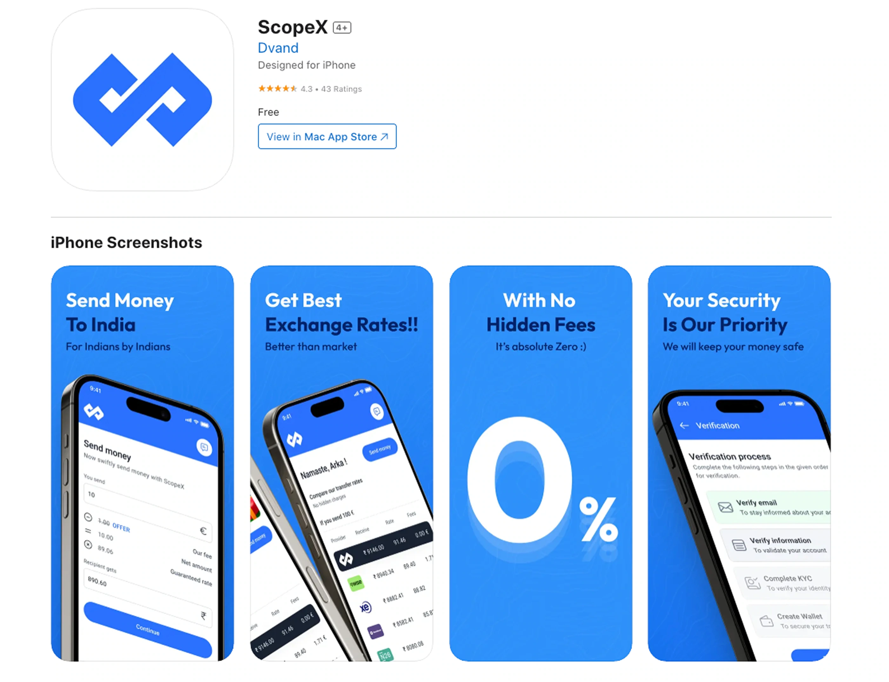
Existing V1
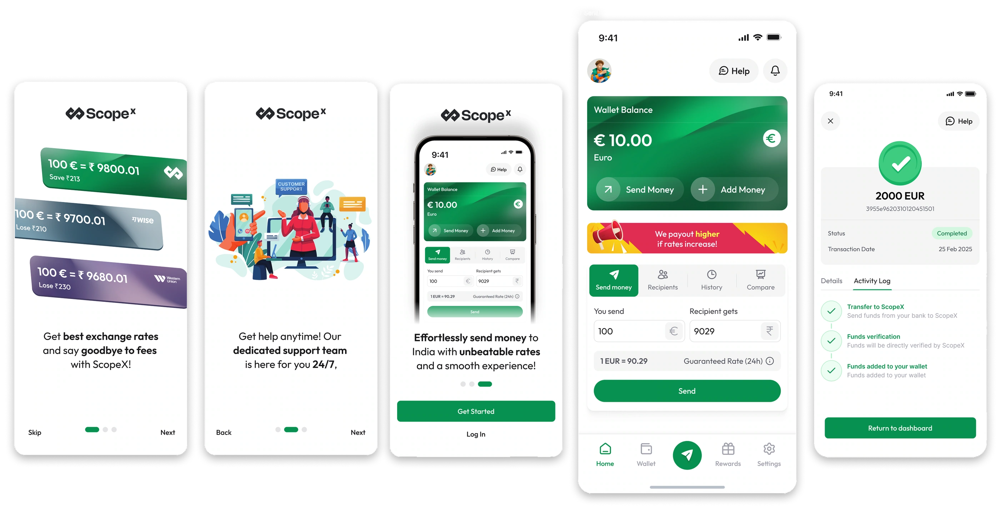
In-house proposed V2
V1 baseline
What ScopeX had already achieved before the visual and narrative shift.
€40 millionsent home
23,000users
Business goals
Build a reason to choose ScopeX
Increase transfer frequency
Improve new-user experience completion
Compete on exchange rates
User goals
Send money with confidence
Fast, straightforward transfers to India
Best exchange rate and low or zero fees
Transfer tracking and easy recipient management
The business wanted users to transfer more often. Users wanted more of their money to reach home, without uncertainty or effort. Could one experience serve both ambitions?
02 / Human insight
The audience wasn't just a demographic. It was a relationship.
The starting definition of a typical ScopeX user was a professional aged 25–40. Useful for segmentation, but insufficient for understanding what the product meant to them.
Working, studying or settled abroad, these users may be physically far from India, but remain emotionally and financially connected to the people and responsibilities they left behind.
Consider a first salary sent to parents, a monthly contribution to the household, or a gift that arrives in time for a festival. In each of these situations, the transfer is a means to something more personal.
For a price-conscious sender, saving on conversion can matter not just because it costs less, but because the same money can do more for someone back home. That was the connection I wanted the product to make. The design hypothesis was that users could feel capable, recognised and proud of what they were providing — while still getting a fast, dependable transfer.
Functional
Send efficiently
Send money home quickly, at the best rate, without complexity.
Emotional
Feel capable
Feel like a provider. Feel that the money means something when it arrives.
Identity
Show up for home
Sending money home is an emotional act, not merely a financial transaction.
If sending money home is more than a financial act, the experience shouldn't end at making the transaction work.
03 / Strategy
Make a financial transfer feel emotionally real.
I used the overlap between business goals and human motivations to frame four interconnected design interventions. The ambition was not to add sentiment to a functional product, but to make its value clearer, its use more natural and its relationship with users more meaningful.
01 / Make invisible value visibleBehavioural economics · Value framing · Retention
ScopeX was already sending more money home. It just wasn’t telling users.
Its competitive conversion rates meant that, for the same outlay abroad, more INR could reach the recipient than through a less favourable alternative. ScopeX already displayed the amount the recipient would receive in INR. What it did not communicate was the incremental INR enabled by choosing ScopeX over a less favourable alternative. Users were left to calculate that difference themselves. The benefit existed, but the experience wasn't making it tangible.
I reframed that difference as savings with a purpose: not just money saved, but money sent extra to the people who matter.
Before / Implicit advantageCompetitive exchange rate.
The user has to work out what the rate means.
→
After / Tangible value₹368 sent extra.
More money reaches home, for the same outlay.
Showing the incremental gain establishes a reference point. It also makes the potential loss of that benefit salient when considering another provider — an opportunity to apply loss aversion alongside gain framing. A competitive rate becomes a reason to choose ScopeX, not just a number on a screen.
At the point of transfer₹368sent extra
→
Across the relationship₹6,350sent extra so far
And why should that value disappear after each transfer? I proposed carrying the benefit forward into the home experience. Cumulative extra sent could make the value of a continuing relationship visible, creating a reason to return without depending entirely on new discounts or offers.
Illustrative values from the original storyboards. Actual savings claims require a transparent, like-for-like reference rate and applicable fees. The retention and loss-aversion effects are design hypotheses, not independently measured outcomes.
02 / Recognise the person behind the transferIdentity-based motivation · Emotional reinforcement
Celebrate the provider, not just the transaction.
The first time someone sends money home from their own paycheck can be a milestone. The fiftieth time can be an expression of sustained responsibility. A generic success message treats both as nothing more than a completed task.
Task acknowledgement
Transfer successful.
Identity reinforcement
You showed up!
I explored acknowledgement that recognises what a person has done for someone else, alongside unambiguous transfer status and progress. The aim was to reinforce the user's sense of agency and identity as a provider, rather than make the brand the hero of the moment.
The product facilitates the act. The user is the one who makes it matter.
03 / Fit into existing behavioural rhythmsContextual nudges · Habit-supporting design
Design for rituals, not artificial engagement.
Remittance is often tied to events that already exist in a person's life: a paycheck, a recurring household commitment or an occasion back home. Rather than trying to invent reasons to open a money transfer app, I explored how ScopeX could become a natural choice when the need arose.
In the returning-user storyboard, Siddharth sends money home on the 15th. A relevant reminder, a saved beneficiary and visible cumulative value support a routine he already has. The product's role is to reduce friction and reinforce confidence, not manufacture engagement for its own sake.
04 / Design for the state of the relationshipRisk perception · Lifecycle strategy · Service recovery
Trust is not a static product attribute.
Money in transit is emotionally loaded. Exchange rates move, delays create anxiety, and alternatives are a tap away. Trust therefore needs to be designed for the user's history with ScopeX, not treated as a uniform message for everyone.
New user
Earn it.
Make the value clear, explain what will happen and give people a reason to believe before they commit.
Returning user
Reinforce it.
Reduce repeated effort, communicate status clearly and remind users why their previous choice was worthwhile.
Lapsed user
Repair it.
Acknowledge what went wrong, demonstrate what has improved and make the previous relationship's value visible.
For a user who has experienced delays, an attractive rate or a warm message alone cannot restore confidence. Service recovery must be grounded in demonstrable improvements. The experience should make those improvements legible and set realistic expectations through clear progress, progressive disclosure and honest feedback.
One strategy / Multiple moments of value
These interventions work together: make the incremental financial advantage apparent, recognise the person behind the act, fit into their life and protect their trust. Together they formed a product narrative that could travel across every touchpoint.
The narrative shift
Designed for love. Disguised as money.
Remittance as an expression of care, connection and responsibility. A guiding narrative for how ScopeX communicates value, builds trust and connects with people.
From strategy to decision-making
Five design principles to keep the experience honest.
These are the practical guardrails that carry the narrative into everyday product decisions.
01
Emotionally resonant UX
Celebrate the provider, not just the transaction.
02
Value clarity & anchoring
Show what the family receives. Make the incremental benefit explicit.
03
Frictionless, guided flows
Reduce effort, enable small wins and make progress visible.
04
Set expectations
Disclose information when it matters. No surprises about cost or timing.
05
Trust by design
Use credible signals and dependable feedback to strengthen confidence.
Execution
One narrative, every discipline.
UX and flows, visual design, motion and Lottie, copy and content.
04 / Expression
From functional fintech to something that felt like home.
The strategy had to show up in the smallest details of the experience. What if a saving looked familiar, a recipient felt like family, and the product’s first words told users why its functionality mattered? I explored how visual metaphors, language and interaction could carry the same narrative through every touchpoint.
Visual language / Cultural familiarity
A little closer to home.
For people living away from India, I wanted the product to feel culturally familiar without losing the clarity and credibility expected of a financial service. The intent was to evoke belonging, not to decorate an interface with cultural motifs.
A sunset over the Yamuna became a visual reference: turmeric yellow, saffron orange and Yamuna blue. The palette was one part of a wider expressive language, alongside everyday symbols of saving, familiar family relationships and the language of home.
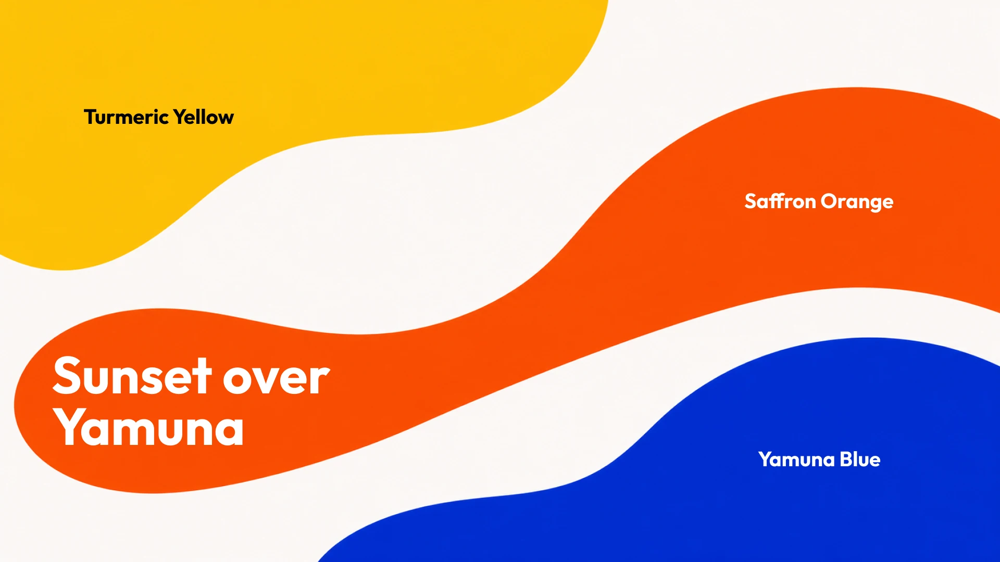
Sunset over Yamuna — turmeric yellow, saffron orange and Yamuna blue
01 / First impression · Onboarding
Introduce the meaning, not just the mechanics.
ScopeX already had compelling functionality. Rather than present it as a list of features — competitive rates, simple transfers and low fees — I explored packaging those capabilities around the human reasons people send money home.
The first-time experience could introduce a financial advantage as a little more care reaching family, while retaining the information needed to make a confident decision.
The shiftEvery rupee saved is a little more love sent.
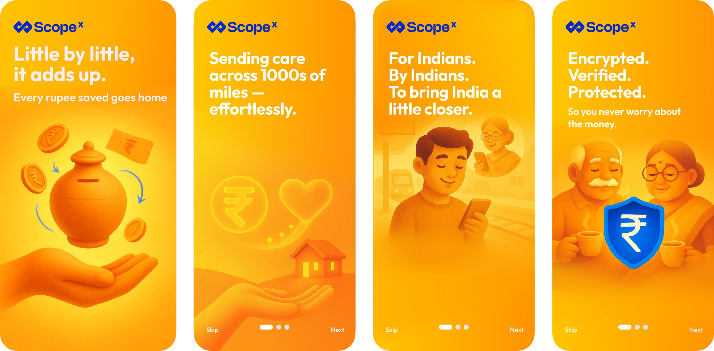
First impression: onboarding
02 / Perpetual impression · Home
Make money feel familiar. Make family feel present.
Two small but deliberate interventions brought the narrative into the everyday experience of sending money.
Visual metaphor / Savings
A little extra, in the gullak.
I used the gullak — a familiar Indian piggy bank — to represent the extra rupees sent through ScopeX. A rate advantage became something recognisable: money saved, accumulated and put to better use back home. The number stayed explicit; the metaphor gave it meaning.
Language & avatars / Frequent recipients
Not just a beneficiary. Mummy. Papa.
I explored familiar nicknames and avatars for frequent recipients, bringing the interface closer to how people recognise and refer to their loved ones. Alongside clear recipient identification, this personal layer could make repeat transfers easier to recognise and more human.
A successful transfer is a system event. For the sender, it can also be a moment of pride, relief or care. I explored feedback that acknowledges both: communicate the transfer status unambiguously, then recognise the person who made it happen.
Illustrative confirmation copy₹13,950 is on its way home. You showed up!
For returning users, contextual reminders and accumulated savings could reinforce the same story without turning remittance into an artificial engagement loop.
I carried the narrative across the website, campaigns, notifications and email. The message could adapt to the moment — a reason to try ScopeX, a reminder of value already received, or a reason to reconsider after a disappointing experience — without losing its core meaning.
For service recovery in particular, warmth was not a substitute for evidence. Acknowledging the failure and communicating credible improvements were integral to rebuilding confidence.
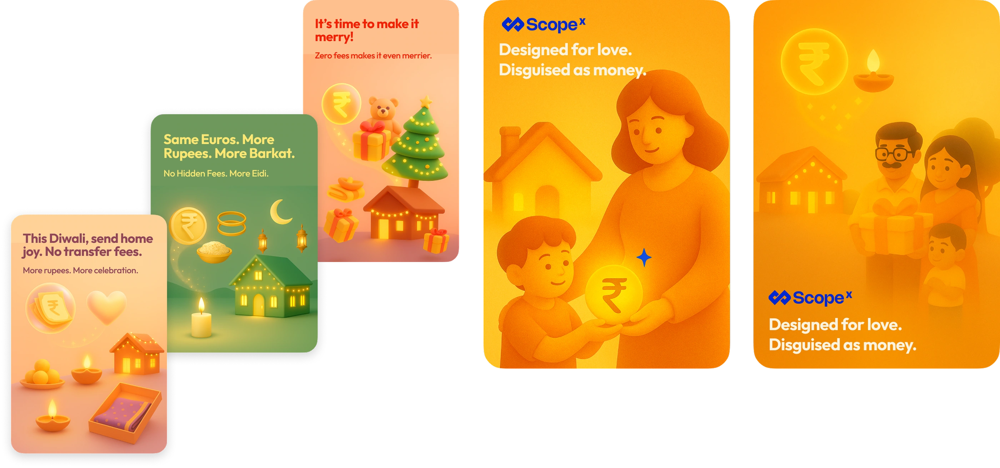
Last-ing impressions: campaigns
A coherent narrative system
The functionality remained financial. The expression became human.
The gullak, family nicknames, avatars, onboarding language and moments of recognition were not isolated embellishments. Each was a different expression of the same idea: make the value ScopeX creates tangible, and the reason people send money home visible.
But that story has to meet people where they are in their relationship with the product. What earns trust on the first transfer may be different from what reinforces it on the fiftieth, or restores it after a failure.
05 / User journeys
One value proposition. Three very different reasons to believe.
To explore how the strategy could adapt across the customer lifecycle, I storyboarded three moments in people's lives. The value proposition remains consistent; what it needs to do for the user changes.
NUX / New user experience
The first paycheck
Aarav, 24, moved from Indore to Berlin six months ago. His first salary has arrived. He wants to send something home.
Earn my trust. Give me a reason to believe in you.
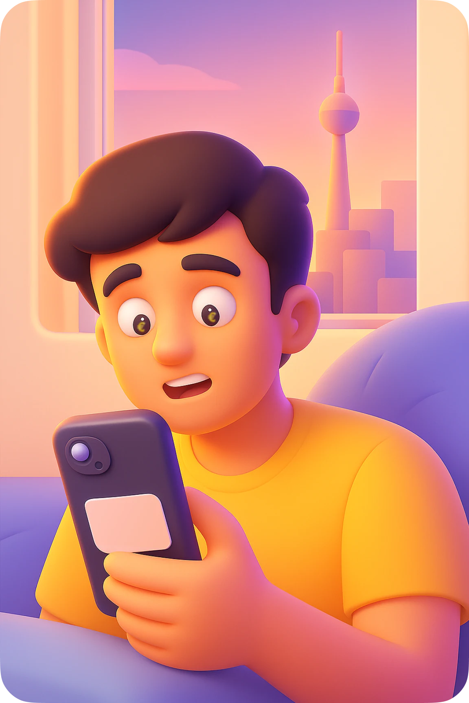
The wake-up text
10:00 AM
The wake-up text
Aarav sees his first salary in his bank account. Berlin is grey, but he feels bright inside. He decides to send money home.
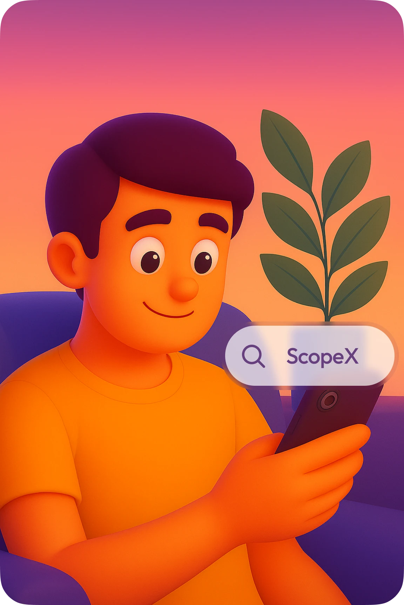
Discovery
11:15 AM
Discovery
An Indian friend recommends ScopeX. The app-store promise connects savings with love sent home, making the benefit personal.
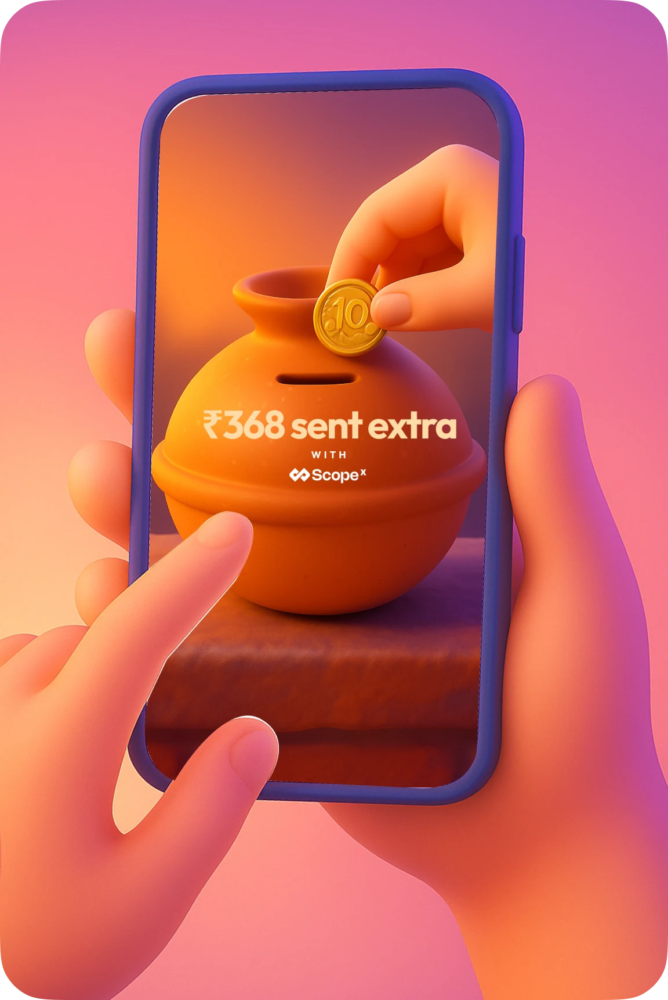
First-time experience
11:30 AM
First-time experience
He enters €150. The illustrative experience shows ₹13,950 for his family — ₹368 extra with ScopeX. The rate becomes meaningful.
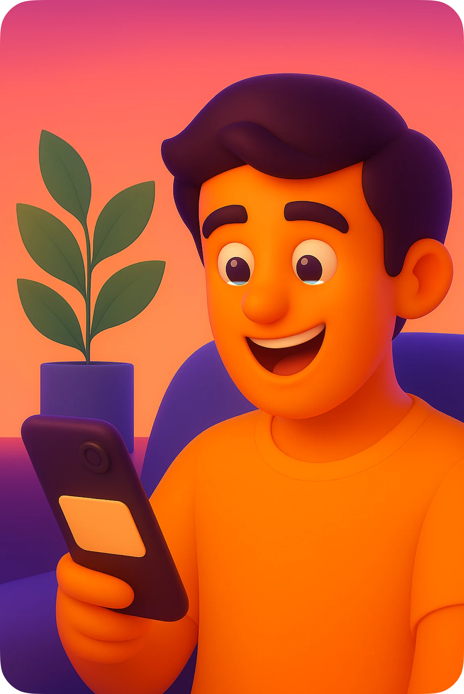
The heartbeat moment
11:36 AM
The heartbeat moment
“₹13,950 is on its way home. You showed up!” The experience recognises the person, not just the completed transfer.
Earn trust
Aarav’s first paycheck becomes a moment of agency. Discovery makes the rate advantage concrete; onboarding shows the extra INR alongside the amount already presented as reaching home; the confirmation recognises what he has done.
RUX / Returning user experience
The 15th means something
Siddharth Rao, 32, a postdoctoral researcher in Berlin originally from Hyderabad, sends money on the 15th.
Reinforce my choice. Remind me why you’re worth coming back to.
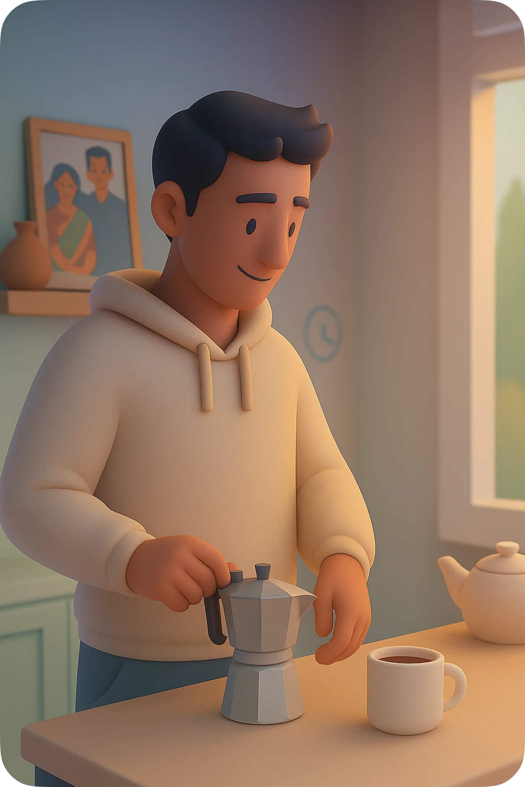
Like clockwork
Every 15th
Like clockwork
After his filter coffee, Siddharth gets ready to start his day. Sending money home is part of his routine.
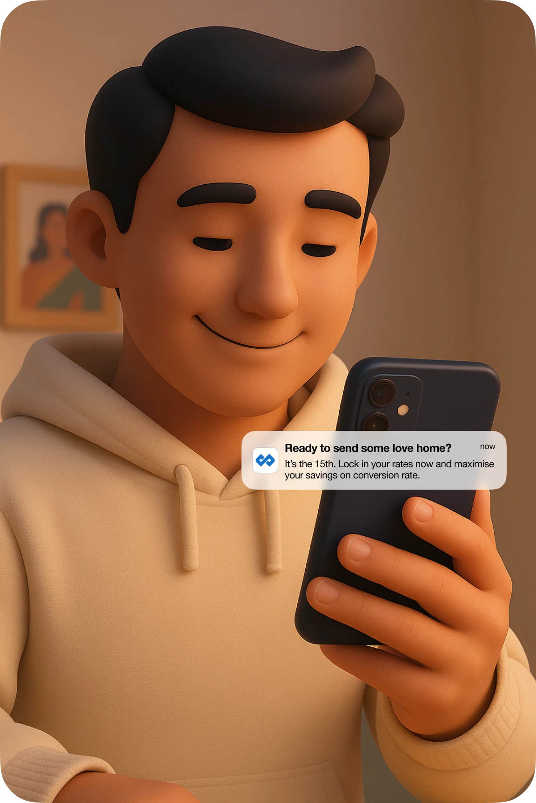
The quiet ritual
8:12 AM
The quiet ritual
A timely reminder invites him to send love home. Appa is already saved as his beneficiary. The experience makes cumulative value visible: “You sent ₹6,350 extra so far with ScopeX.” The locked rate reinforces his decision.
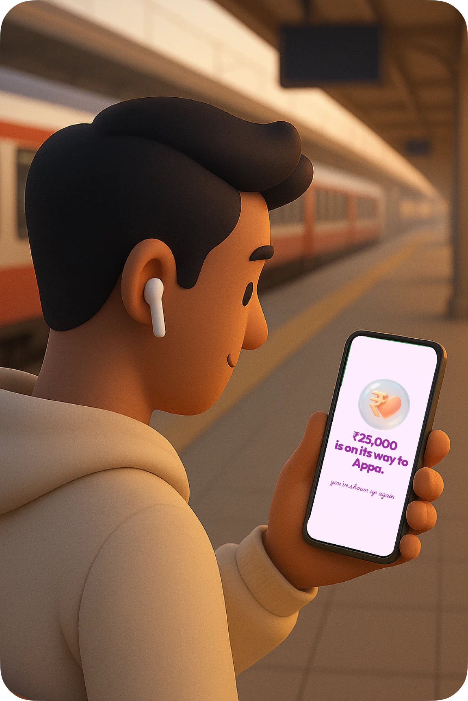
Small nudges, big feelings
8:15 AM
Small nudges, big feelings
At the station he receives a transfer notification: “₹25,000 is on its way. You’ve shown up again, Siddharth.”
Headed to the lab
8:40 AM
Headed to the lab
On the tram, he watches a video of his parents unpacking the air fryer he funded last month. The money has a meaning beyond the transaction.
Reinforce trust
Siddharth’s existing routine becomes the starting point. A contextual nudge, familiar recipient, visible accumulated value and reassuring feedback support his decision to return.
LUX / Lapsed user experience
The moment trust slipped
Neha was a loyal user until two delayed transfers left her unwilling to take another chance. She uninstalled the app.
Win me back. Give me a meaningful reason to return.
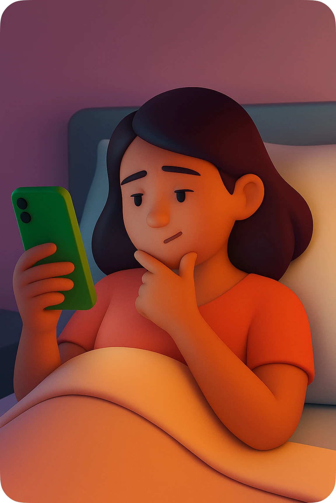
The unexpected email
One month later
The unexpected email
An email catches her attention: “We owe you a better experience.” She opens it.
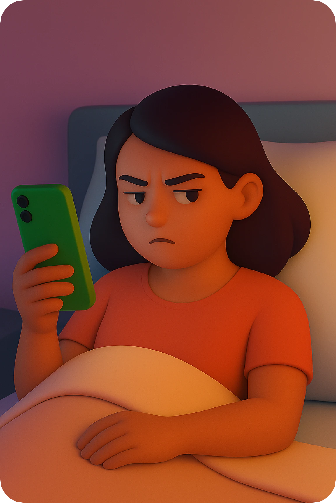
Trust doesn’t come easy
9:28 PM
Trust doesn’t come easy
She wonders whether the service has actually improved. Curious but sceptical, she opens the app store.
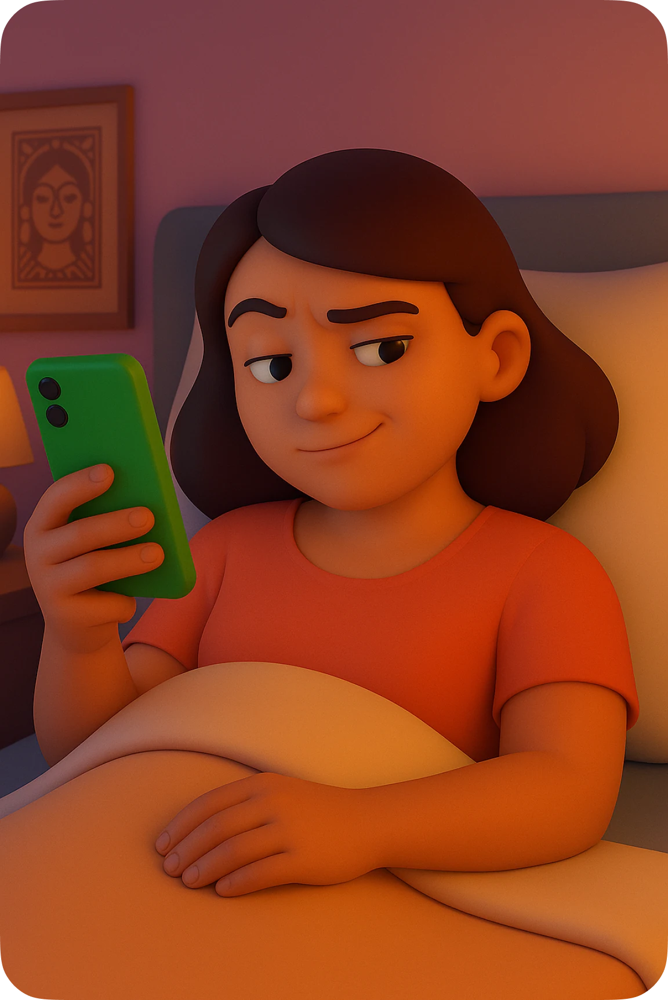
It felt personal
9:30 PM
It felt personal
The words “Home. Care. Love.” reconnect the app to her original motivation for sending money.
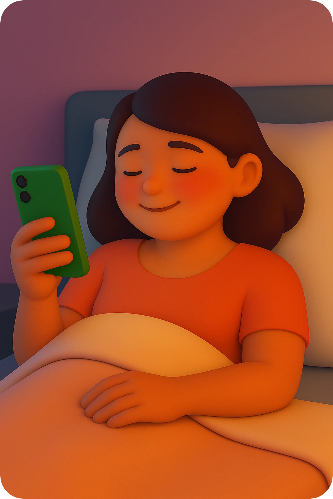
₹4,623 reasons to believe again
9:31 PM
₹4,623 reasons to believe again
Cumulative extra savings and a message about improved transfer times provide a tangible reason to reconsider. The specific numbers are illustrative storyboard content.
Repair trust
Neha needs evidence of change, not simply a cheaper rate. The proposed recovery email acknowledges her experience, describes a concrete service improvement, reinforces the original rate advantage and offers a low-friction invitation to try V2. The returning experience then reminds her of the cumulative value she had already received. Together, these touchpoints form a recovery loop — provided the operational improvements and claims can be substantiated.
These are illustrative personas and scenarios from the original case study, not documented customer interviews or measured journey outcomes. Exchange rates, savings and transfer-time figures in these stories illustrate the proposed experience.
06 / Impact
From narrative shift to metric shift.
The ambition was to connect human value with commercial value. The original case study reports the following growth since the V2 launch.
400%+
Growth in cumulative remittance volume
204%
Growth in user base
Post-launch figures as reported in the ScopeX case study. Measurement window and methodology are not specified; the numbers are not presented as solely attributable to my consulting contribution.
Beyond the interface / The human outcome
The transaction ends in the app. The impact lands at home.
Behind every transfer is something the sender is making possible for someone back home — a family’s everyday needs, a shared moment, a small comfort, a bigger possibility. Money is simply the medium. This illustration brings the narrative back to the people it was designed around.
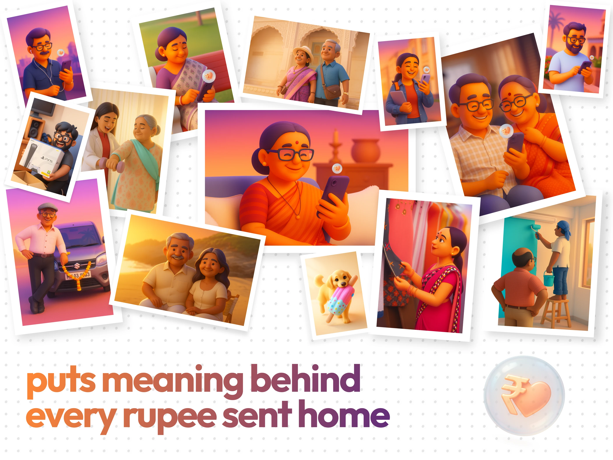
The meaning behind every rupee sent home — an illustration of the human outcome.
Reflection
Solve what the business needs. Design the feeling that makes it matter.
The work reinforced something I believe about product strategy: storytelling is not the layer you add once the experience is designed. It can be the lens through which you decide what to design, what to prioritise and what to make visible. In this case, the story was already there — in the value ScopeX created and the meaning of the money people sent home.